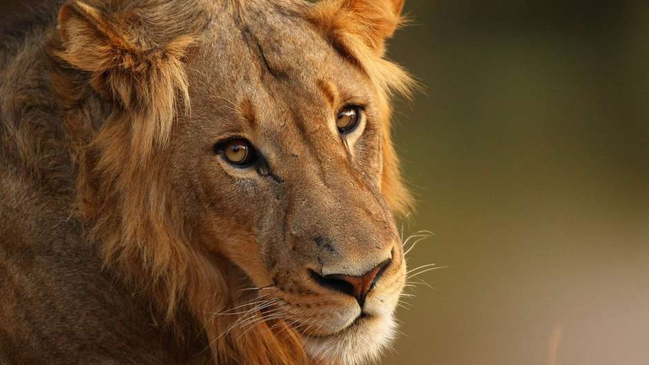

Curiosidades
Apenas gatinhos...
Os leões pertencem a família de gatos dos animais conhecida como felinos; eles são os segundos maiores felinos, perdendo somente para os tigres.
Leoas contra o patriarcado.
Uma leoa, que é menor do que um leão, lidera o grupo.
Rugido imponente
Quando um leão ruge, pode-se ouvir o som que ele emite de uma distância de 8 quilômetros.
Rápido e com classe
Ele também pode correr a 80 km/h por curtas distâncias, e quando ele anda seus calcanhares não tocam no chão.
Juba e suas colorações.
Quanto mais escura é a juba, mais idade tem o leão.